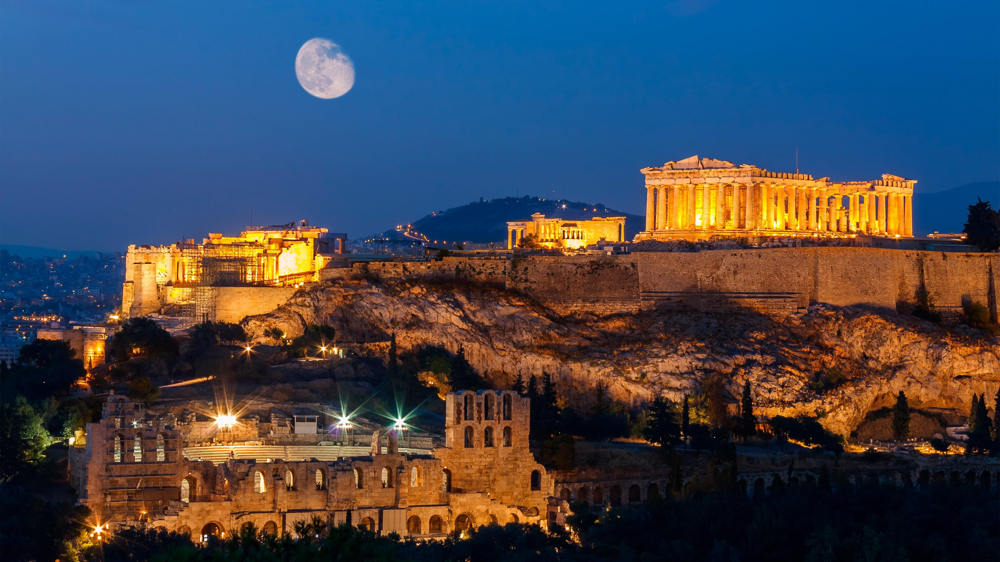
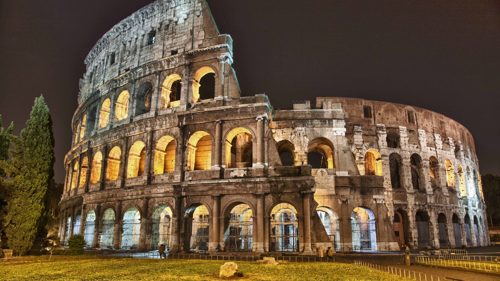
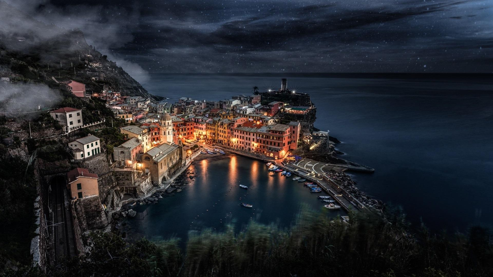

The date of the establishment of the Roman city is uncertain. It is traditionally believed to be in 753 BC. This has been widely confirmed by archaeological discoveries, although some people may have already lived there before. Traditionally, the Romans attributed the creation of the city to the hero Romulus. He and his twin brother Remus are descendants of the hero Aeneas. Aeneas was the son of the Greek goddess Aphrodite (called Venus in Roman mythology), who came to Italy after the Greeks occupied Troy.
Around 2000 BC, there were Romans living here. The city was founded in 753 BC and has a long history of more than 2,700 years. The Romans proudly called it the "eternal city".
According to legend, Romulo, the founder of Rome, was raised by a she-wolf, and the emblem of the ancient city of Rome was a she-wolf who nursed her baby.
The city of Rome is the birthplace and capital of the Roman Empire. In the 1-2 century AD, Rome became the largest empire in Western history, and the city of Rome entered its heyday.
In Rome's history of about 2,800 years, it has experienced glorious periods of the Eastern Roman Empire and Western Rome.
In 1870, the army of the Kingdom of Italy captured Rome and the cause of Italian unification was completed.
In 1871, the capital of Italy moved from Florence to Rome.
The famous "mother wolf suckling baby" story records the legend about the creation of the ancient city of Rome. In the 7th and 8th centuries BC, the Roman king Numi Tore was usurped and expelled by his brother Amrio. His son was killed. His daughter Silvia combined with the god of war Mars and gave birth to twin brothers Romulo and Ray Mo. Amrio threw the two twin babies into the Tiber. The baby who fell into the water was lucky enough to be fed by a she-wolf with milk, and was later raised by a hunter. Later, when the two brothers grew up, they killed Amrio and welcomed their grandfather Numitore back to the throne. Numitore gave them 7 hills along the Tiber River to build a new capital. Later Romulo settled the city privately, killed Remo, and named the new city Rome after himself. This day was April 21, 753 BC, and it was later designated as the Day of the Founding of the Roman City, and the "Wolf and Baby" design was designated as the Roman city emblem.
 Rome, the capital of Italy, is one of the birthplaces of world culture. It has accumulated thousands of years of historical relics and has a rich cultural heritage. It was built on 7 hills between the Taibo River, and it has been destroyed and revived several times. The scale of ancient Roman ruins is magnificent, it is imaginative and lingering.
Rome, an ancient name, is known as the "City of Ten Thousand Cities" because it has a glorious history. The glory of the Roman Empire and the supremacy of the Catholic Church have all constituted the glory of Rome for nearly 2500 years.
Rome is the world's Catholic center, the world's cultural capital, and the world's historical and cultural city. Rome is 25 kilometers west of the Tyrrhenian Sea. The urban area spans both banks of the Tiber River and has 24 bridges. The population is 2.83 million (1988).
Around the beginning of 2000 BC, Romans moved here from the northeast. From the 8th to the 4th century BC, the castle was built and gradually formed an early Roman city.
It was the capital of the Papal State from 756 to 1870 AD, and became the capital of Italy after the unification of the Kingdom of Italy in 1870 (the Papal State retreated to the Vatican).
Industries include food, textiles, machinery, printing, chemicals, electronics and plastics. The main center of the Italian film industry. Civitavecchia on the northwest coast is its main port. One of the most famous tourist places in the world.
The ancient Roman city, which accounts for 40% of the urban area, has many large-scale ancient buildings (such as the Flavian Semi-Amphitheatre, the Colosseum, the Grand Acrobatics Arena, the Pantheon, the Diocletian’s public bath, etc.) and art treasures. The Vatican in the northwest of the city is the seat of the Holy See. There are churches, palaces, museums, universities (Rome II University ranked 36th in the latest ranking of 301-400 in the 2013 QS World University), academies of sciences, and libraries.